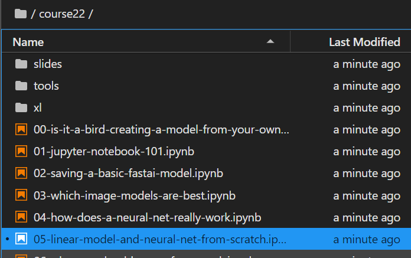
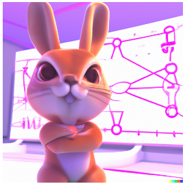
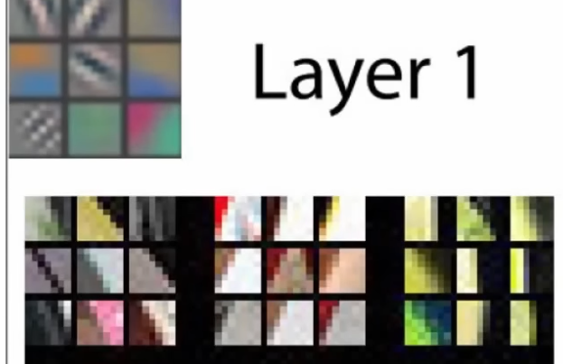
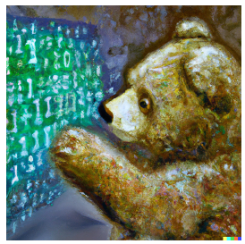
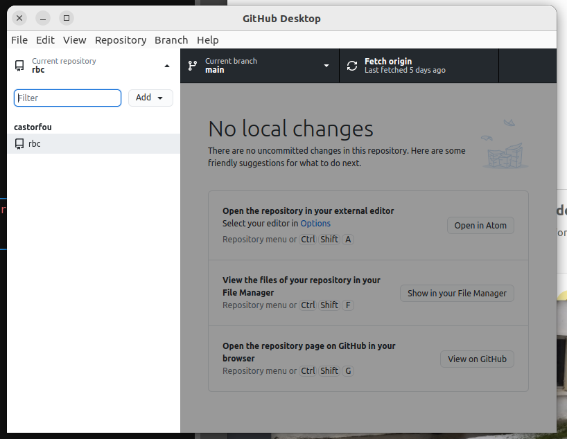
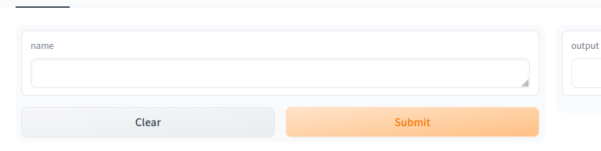
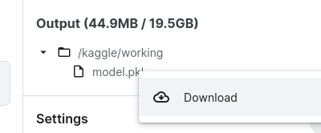
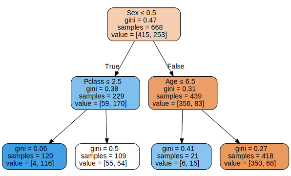
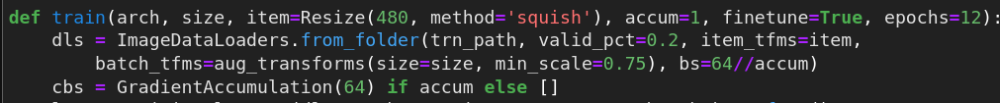

Github fastai/course22 is where you’ll find the notebooks, slides, and spreadsheets for the 2022 edition of Practical Deep Learning for Coders. we can get a local version from .
cd ~/gitgit clone https://github.com/fastai/course22.git cd course22

image.png
Lesson 1 - Getting started

image.png
In this lesson you’re going to hit the ground running – in the first five minutes you’ll see a complete end to end example of training and using a model that’s so advanced it was considered at the cutting edge of research capabilities in 2015.
So, let’s get started!
In 2015, nearly impossible to recognize a bird with CS. And Jeremy doing that in 2 minutes ;)
Recent progress
After this brief demonstration, Jeremy shared what he remmbers about recent progress in AI such as:
artworks: Dall-e, midjourney to create images from text
explaining jokes: Google Pathways Language Model (PaLM) to explain jokes or run mathematical proof
Self learning of features
Then classical but nice explanation that NN learns features (features are not given or coded) and illustrates that with Matt Zeiler and Rob Fergus works

image.png
Vision can be used in many different ways
And it is of course used to classify images, but all these techniques can be combined out of this field for example:
recognize sound by transforming sound waves into pictures (Ethan Sutin)
And now some hands-on starting with Is it a bird?notebook.
And aside note: Jeremy is running all the presentation through Jupyter notebook and RISE
It’s a good idea to ensure you’re running the latest version of any libraries you need.
!pip install -Uqq libraries upgrades to the latest version of libraries (fastai for example)
Going through this “is it a bird?” notebook
Jeremy shares best practices and steps
Such as viewing your data between each steps
Jeremy uses a lot of functional programming it is why we see things like map used a lot.
DataBlock
Using Datablocks API
To train a model, we’ll need DataLoaders, which is an object that contains a training set (the images used to create a model) and a validation set (the images used to check the accuracy of a model – not used during training). In fastai we can create that easily using a DataBlock, and view sample images from it:
And Jeremy explains the logic between the 5 arguments needed to create a DataBlock:
blocks: tupple with type of inputs and output
get_items: to get all data, here it points to a function to get list of image fileS
splitter: method to split between training set and validation set
get_y: to kown labels, here it is a function
item_tfms: which transformation to apply
And from a DataBlock you create dataloaders (dls) provding (path for images; and bs (batch size))
learners
This is a key part.
Learners are taking 3 arguments: dataloaders, model, metric
Here we train a pre-trained model, which is called fine_tune and we do it on 3 epochs.
predict
Just providing an item to lean.predict will return label, tensor value, probability
And it is why we have such outputs
image.png
and beyond image recognition
Segmentation
image.png
And here we don’t have datablock but direclty dataloaders
Tabular analysis
Here again no need for DataBlock but a direct use of TabularDataLoaders
image.png
And the tabular_learner wich takes dls and metric.
Collaborative filtering (recommandation system)
Lesson 2 - Deployment

image.png
Today you’ll be designing your own machine learning project, creating your own dataset, training a model using your data, and finally deploying an application on the web. We’ll be using a particular deployment target called Hugging Face Space with Gradio, and will also see how to use JavaScript to implement an interface in the browser. Deploying to other services will look very similar to the approach you’ll study in this lesson.
Aside the explanation on HF, Jeremy shares how useful Github Desktop is.

image.png
create 1st gradio app and host it
Create app.py as instructed in our freshly created HF space. Commit Push (using github desktop). Back to HF interface, something is being built. and voila

image.png
Nothing new because I played with gradio and HF couple of weeks ago.
We know have a basic app hosted. We can just integrate a deep learning model.
Finally, open the Kaggle sidebar on the right if it’s not already, and find the section marked “Output”. Open the /kaggle/working folder, and you’ll see model.pkl. Click on it, then click on the menu on the right that appears, and choose “Download”. After a few seconds, your model will be downloaded to your computer, where you can then create your app that uses the model.

image.png
And copy/past it to your local minima repo. Push it to HF.
Generate a copy of this repo by clicking on this link. Make sure to sign in to your account, or you will see a 404 error. Name your repo anything you like except {your-username}.github.io.
Apply a theme (to be setup in _config.yml)
Create an index.md file which is the landing page.
Today we’ll be learning about the mathematical foundations of deep learning: Stochastic gradient descent (SGD), and the flexibility of linear functions layered with non-linear activation functions. We’ll be focussing particularly on a popular combination called the Rectified linear function (ReLU).
I had to configure this repo to use git-lfs to store large binary files:
git lfs install#if needed reset the last commitgit reset --soft HEAD^git status#if offeneded files ar already staged, restore themgit restore --staged*.jpggit status#add them backgit add -A#check they are managed by git lfsgit lfs ls-filesgit commit -am'recommit after lfs install'git push
It’s time for us to learn how to analyse natural language documents, using Natural Language Processing (NLP). We’ll be focusing on the Hugging Face ecosystem, especially the Transformers library, and the vast collection of pretrained NLP models. Our project today will be to classify that similarity of phrases used to describe US patents. A similar approach can be applied to a wide variety of practical issues, in fields as wide-reaching as marketing, logistics, and medicine.
Today we look at how to create a neural network from scratch using Python and PyTorch, and how to implement a training loop for optimising the weights of a model. We build up from a single layer regression model up to a neural net with one hidden layer, and then to a deep learning model. Along the way we’ll also look at how we can use a special function called sigmoid to make binary classification models easier to train, and we’ll also learn about metrics.
Just restarting from titanic dataset and exactly as what was made in excel, now we do it with PyTorch.
It is good to see how much fiddling it requires. This is good to develop intuititions but defintely it is not what you want to implement when exploring a question.
Random forests started a revolution in machine learning 20 years ago. For the first time, there was a fast and reliable algorithm which made almost no assumptions about the form of the data, and required almost no preprocessing. In today’s lesson, you’ll learn how a random forest really works, and how to build one from scratch. And, just as importantly, you’ll learn how to interpret random forests to better understand your data.
And repeating binary split on 2 dataset already split makes it a TwoR approach… And we can continue recursively. This is what a DecisionTree is.
draw_tree(m, trn_xs, size=10)

Then Jeremy explains different ensemble approached: - by subsetting rows (and columns) and averaging predictions - this is bagging and random forest is one implementation - by focusing on residuals on each steps and summing predictions - this is boosting and gradient boosting decision trees is one implementation. Jeremys’explanation at explained ai
And he mentions feature importance, dependency plot, waterfall plots, oob errors, and other stuff from book chapter 9.
You interact nearly every day with recommendation systems—algorithms which guess what products and services you might like, based on your past behavior. These systems largely rely on collaborative-filtering, an approach based on linear algebra that fills in the missing values in a matrix. Today we’ll see two ways to do this: one based on a classic linear algebra formulation, and one based on deep learning.
This is about dealing with GPU memory management and training with less memory (and adjusting batch size in a smart way (combined with gradient accumulation))
In fastai, it is done with 
you adjust bs and use callback with GradientAccumulation
Jeremy explains latent factor, the way to implement them in pytorch. Then bias factor added to these matrices to adjust bias. ProductBias to calculate similarity. And the full learning process. Then introduces weight decay as a way to regularize (avoid overfitting).
There is a chapter on interpreting Embeddings and Biases but Jeremy has not gone through it.
Today we finish off our study of collaborative filtering by looking closely at embeddings—a critical building block of many deep learning algorithms. Then we’ll dive into convolutional neural networks (CNNs) and see how they really work. We’ve used plenty of CNNs through this course, but we haven’t peeked inside them to see what’s really going on in there. As well as learning about their most fundamental building block, the convolution, we’ll also look at pooling, dropout, and more.
It starts with embeddings and bias and interpretation. Jeremy shows how to visualize bias (which movies are most liked (even by people usually not liking this kind of movies) and disliked) or from a user perspective (which users tend to like all movies or dislike alkl movies)
And to visualize embeddings (thanks to a PCA) to understand which kind of movies we have. (and could be which kind of users we have)